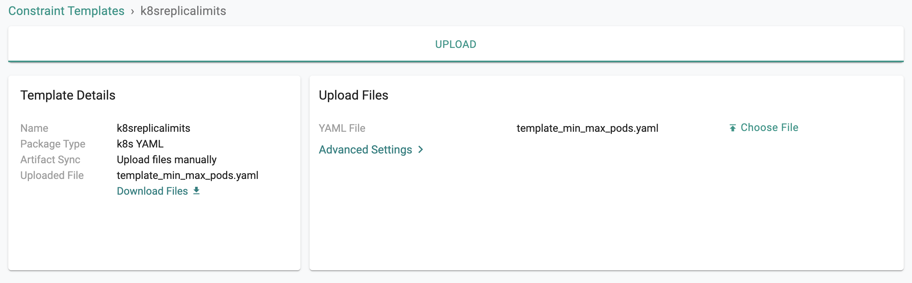
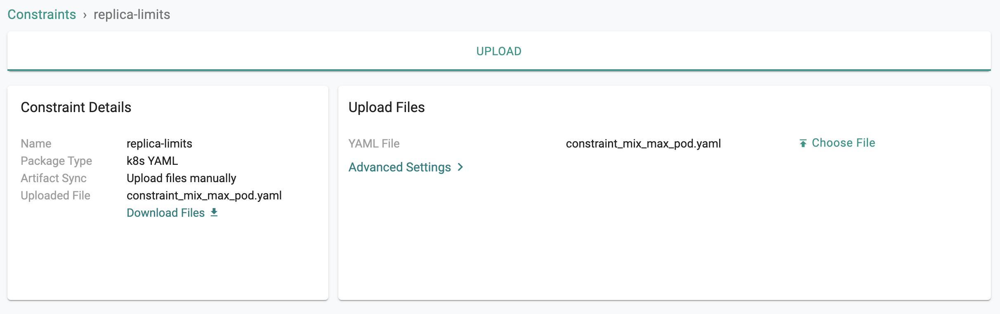
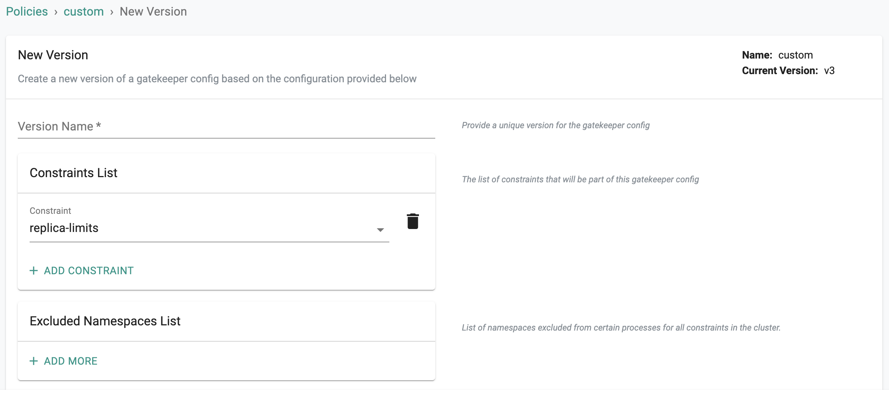
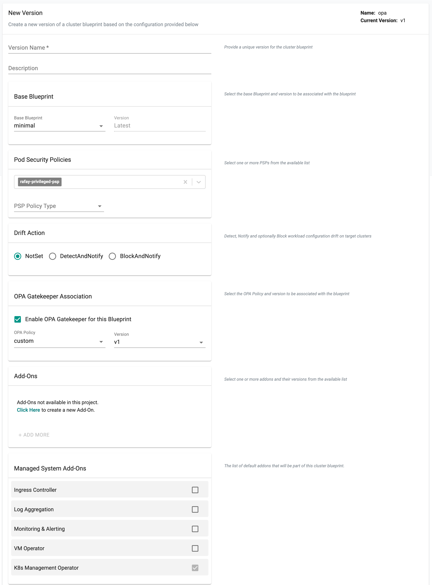
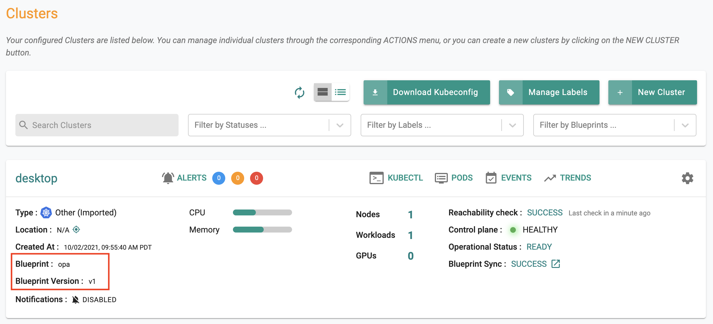
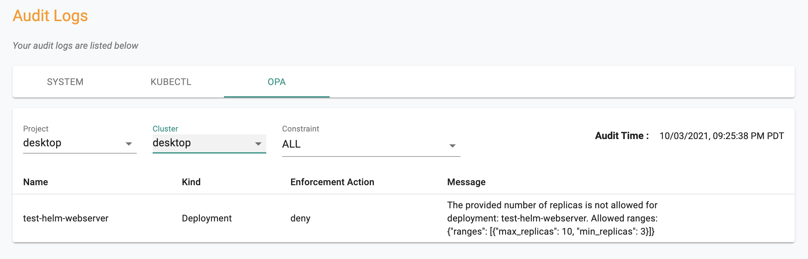
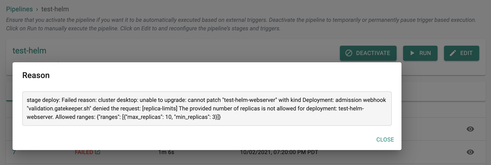

This is Part 8 of a multi-part, self-paced exercise.
In this part, you will create a Kubernetes policy in your project and enforce it on all cluster in your project. You will deploy a workload out of compliance with the policy and notice that it is blocked from deployment to the cluster.
Estimated Time
Estimated time burden for this part is 15 minutes.
One of the key benefits of using OPA Gatekeeper for policy management is that in addition to enforcing policies during “admission” to the Kubernetes cluster, it can also be used to determine which k8s resources “already existing” on the cluster are “out of compliance” with policy.
In this step, we will ensure we deploy a workload from Part-7 with a specific number of replicas that will be out of compliance with our policy. We will use this to show how you can identify resources in violation of policy.
Ensure that the “replicaCount” in the values.yaml file is set to “2”
# Default values for webserver.
# This is a YAML-formatted file.
# Declare variables to be passed into your templates.
replicaCount: 2
nginx:
name: frontend
image:On your cluster, when you kubectl in the workload’s namespace, you should see something like the following.
kubectl get po -n first
NAME READY STATUS RESTARTS AGE
test-helm-webserver-77585694cc-29vtc 2/2 Running 11 10s
test-helm-webserver-77585694cc-qkvjd 2/2 Running 11 10sYou can have as many policies as you want in a Project in an Org. An OPA policy comprises one or many OPA Gatekeeper constraints. In this step, we will create a custom constrain template which will require all “k8s deployments” deployed on the cluster to have a “Replica Count” within the “specified limit”.
Constraint Template

!!! Important Ensure that the name you provide for the template matches the name in the YAML file
apiVersion: templates.gatekeeper.sh/v1beta1
kind: ConstraintTemplate
metadata:
name: k8sreplicalimits
annotations:
description: Requires a number of replicas to be set for a deployment between a min and max value.
spec:
crd:
spec:
names:
kind: k8sreplicalimits
validation:
# Schema for the `parameters` field
openAPIV3Schema:
type: object
properties:
ranges:
type: array
items:
type: object
properties:
min_replicas:
type: integer
max_replicas:
type: integer
targets:
- target: admission.k8s.gatekeeper.sh
rego: |
package k8sreplicalimits
deployment_name = input.review.object.metadata.name
violation[{"msg": msg}] {
spec := input.review.object.spec
not input_replica_limit(spec)
msg := sprintf("The provided number of replicas is not allowed for deployment: %v. Allowed ranges: %v", [deployment_name, input.parameters])
}
input_replica_limit(spec) {
provided := input.review.object.spec.replicas
count(input.parameters.ranges) > 0
range := input.parameters.ranges[_]
value_within_range(range, provided)
}
value_within_range(range, value) {
range.min_replicas <= value
range.max_replicas >= value
} In this step, we will create a “custom constraint” based on the “constraint template” from the previous step. This constraint allows you to “define/specify” a MIN and MAX replicas for all deployments on your cluster.
!!! Important Ensure that the name you provide for the constraint matches the name in the YAML file

apiVersion: constraints.gatekeeper.sh/v1beta1
kind: k8sreplicalimits
metadata:
name: replica-limits
spec:
match:
kinds:
- apiGroups: ["apps"]
kinds: ["Deployment"]
parameters:
ranges:
- min_replicas: 3
max_replicas: 10A policy comprises at least one constraints (default and/or custom) and optional exclusions.

In the previous step, you created a policy comprising OPA Gatekeeper constraints. Now, you will include this policy in a “custom cluster blueprint” and apply it to your cluster. This step will be very similar to what you did in Part 5.
!!! Important You can use the same cluster blueprint for multiple clusters achieving project and org wide standardization and compliance.

Navigate to your cluster and apply the “OPA” custom cluster blueprint on the cluster. In a few minutes, all required components for OPA Gatekeeper and the constraints will become operational on your cluster.

Optionally, you can also use kubectl to look at the OPA gatekeeper resources on the cluster
kubectl get po -n rafay-system
NAME READY STATUS RESTARTS AGE
controller-manager-868759489b-f6xpg 1/1 Running 30 35h
edge-client-75d456497-78tqp 1/1 Running 1 35h
gatekeeper-audit-69d75d695c-rwnnd 1/1 Running 0 28h
gatekeeper-controller-manager-59fb975495-rvnks 1/1 Running 0 25s
gatekeeper-controller-manager-59fb975495-x2fpw 1/1 Running 0 25s
gatekeeper-controller-manager-59fb975495-zj5dg 1/1 Running 0 25s
rafay-connector-6c6c4f67cf-m5c6n 1/1 Running 44 35h
relay-agent-7bb69f58c4-5chgc 1/1 Running 1 35h
velero-dk6wpm1-desktop-55f57589ff-x6nf8 1/1 Running 0 23hTo check if the OPA gatekeeper “constraints” we specified in the policy are operational on the cluster. As you can see from the results, OPA Gatekeeper was automatically deployed to the cluster with configuration from the policy we specified.
kubectl get constraints
NAME AGE
replica-limits 5mThis will perform a real time retrieval of “policy violations” already existing on the selected cluster and display the results to the administrator. In our example, we can see that it is reporting that our pre-existing workload has deployments that violate our policy. A logical approach will be for security administrators to work with the workload owners to remediate the violations.

In this step, we will see what workload owners will experience if they try to deploy a new workload or update an existing workload that is not in compliance with the configured policy in the cluster blueprint.

Congratulations! At this point, you have successfully created a policy and tested enforcement on your Kubernetes cluster.